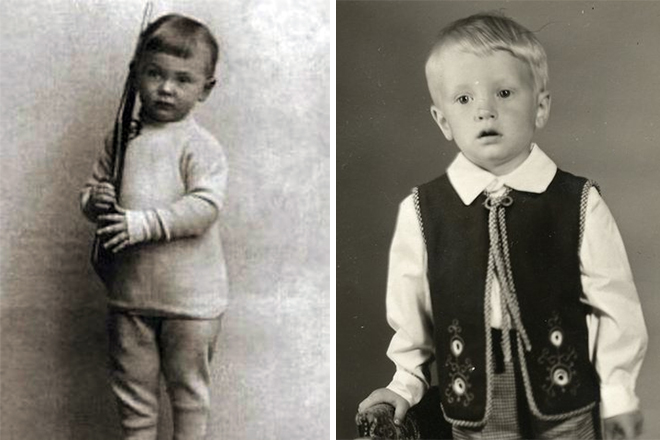
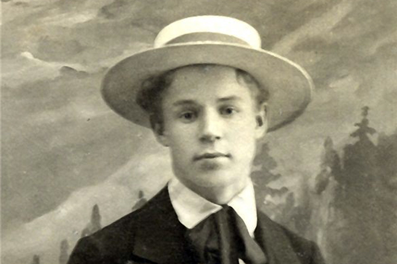
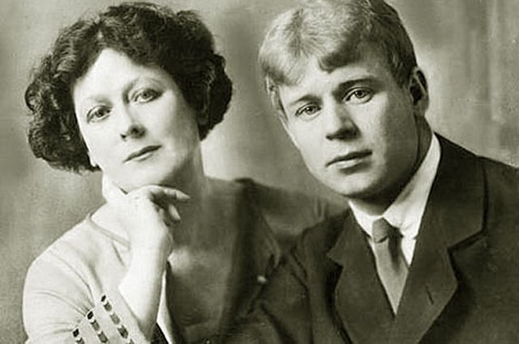
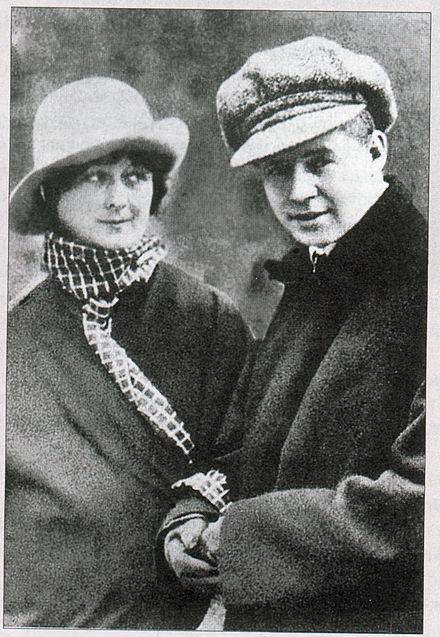
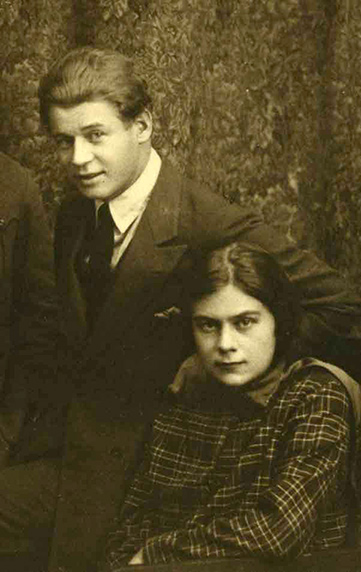
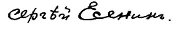

Сергей Александрович Есенин
3 октября 1895 г. - 28 декабря 1925 г.
Биография Сергея Есенина
Известный русский поэт Сергей Александрович Есенин родился в 1895 году в Рязанской губернии, село Константиново. Родители были зажиточными крестьянами. Отца звали Александр Никитич, а мать Татьяна Федоровна, которую выдали замуж против ее воли, поэтому после рождения Сергея она решила вернуться в отчий дом с маленьким сыном.
Воспитание Есенина и первые шаги в творчестве
Спустя некоторое время после рождения сына мать решила отправиться на заработки в Рязань, оставив маленького Сережу на бабушку с дедушкой, которые сыграли немалую роль в становлении Есенина, как поэта. Дедушка, например, был поглощен чтением церковных книг, и старался привить любовь к ним своему внуку, а от бабушки Сергей услышал то, что подтолкнуло его к сочинениям - она пела ему разные песни, частушки, рассказывала сказки, читала... Очевидно, что эти люди сыграли немаловажную роль в биографии Сергея Есенина.
Школу Сергей Есенин закончил в 1912 году, после чего отправился на заработки в Москву, где устроился работать в типографии им. Сытина как помощник корректора. Эта работа была не только очень интересной, но и послужила хорошим подспорьем для раскрытия таланта Есенина - он получил возможность много читать, а также поступил в литературный кружок. Позже жена Есенина Изряднова, с которой он впервые состоял в гражданском браке, сказала, что в те годы Сергей буквально накидывался на чтение книг, тратил на них все свободное время, и не только время, но и жалованье.
Расцвет творчества и поэзия Сергея Есенина
Отучившись примерно год на историческо-философском факультете Московскоо государственного универсистета, Сергей решил бросить учебу и полностью отдаться стихам. Уже в 1914 году детский журнал "Мирок" опубликовал стихотворные произведения молодого Есенина. Вскоре поэзию Сергея Есенина оценили и приняли разные газеты, поэтому Есенин стал печататься и в других изданиях, таких как газеты: "Заря", "Новь", "Парус". В том же году в гражданком браке у Есенина появился сын Юра, которого расстреляли в 1937 году.
Вскоре Есенин переехал в Петроград и сошелся со многими поэтами и писателями тех времен. Он познакомился с Блоком (читайте краткую биографию Александра Блока), Городецким и др. известными людьми, которые заинтересовались его сочинениями. К тому же, говоря о биографии Сергея Есенина, надо сказать, что известность Есенину принес дебютный сборник "Радуница", который он издал после вступления в общество людей, называвших себя "новокрестьянскими поэтами". А зимой 1916 года молодой Есенин получил повестку в армию, и только тот факт, что поэзия Сергея Есенина понравилась при дворе - его стихи слушала даже императрица - помог поэту уйти от военной службы и фронта.
Женщины в биографии Сергея Есенина
В 1917 году Сергей познакомился и обвенчался с Зинаидой Райх. Эти события как раз совпали с Октябрьской революцией, которая набирала обороты, и отношения к которой у Есенина было однозначное - поэт всецело приветствовал ее. Годом позже в свет выходит второй сборник стихов Есенина - "Голубень". Что касается брака с Зинаидой, то Сергей состоял в нем около 5 лет до 1921 года. В этом браке у супругов родилось двое детей - Татьяна и Константин.
Второй раз Есенин официально женился в 1922 году на Айседоре Дункан, которая была знаменитой и обожаемой танцовщицей. Молодые почти сразу уехали в длительное свадебное путешествие, однако после того как они вернулись, брак треснул по швам, и супруги разошлись.
В 1925 году Есенин женится снова, на этот раз его избранницей становится Софья Толстая - внучка Льва Толстого, но и этот брак оказался коротким.
Последний год жизни биографии Сергея Есенина оказался тяжелым - он пребывал в пьянстве, болезнях, много скитался. Особенно активно поэт выступил против засилья евреев. При невыясненных и странных обстоятельствах Сергей Есенин погиб, находясь в ленинградской гостинице "Англетер", куда прибыл из Москвы.
Сергей Есенин в кадрах конохроники. Голос поэта.
Революция в живописи